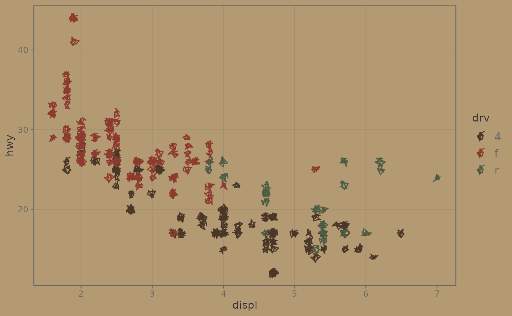
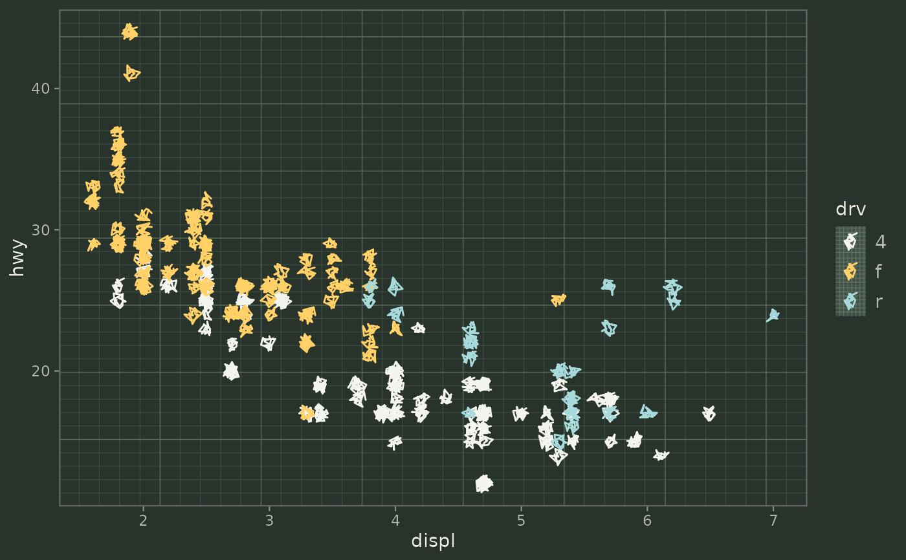

Bundles a theme_sketch() paper ground, a qualitative colour + fill palette
tuned to that ground and (on ggplot2 >= 4.0) matching default geom ink into a
single object to add to a plot: p + sketch_style("chalkboard"). Styles:
Arguments
- style
One of
sketch_styles().- palette
If
TRUE(default), include discrete colour and fill scales using the style's palette. SetFALSEwhen a mapped colour/fill variable is continuous (a discrete scale would error) or you want your own scale.- ...
Passed on to
theme_sketch()(e.g.base_size,rough_frame,seed).paperis fixed by the style and cannot be overridden here.
Details
"notebook"– blue-ruled paper written in ballpoint/fountain-pen inks."chalkboard"– dark board with chalky pastels; pair the line geoms withmedium = "chalk"."blueprint"– cyanotype draughting: pale monoline strokes, warm accent."field_notes"– kraft expedition journal in sepia and olive."graphite"– plain ground, grey pencil tones; pair withmedium = "pencil".
See also
Other sketch-style:
sketch_styles()
Examples
library(ggplot2)
p <- ggplot(mpg, aes(displ, hwy, colour = drv)) +
geom_sketch_point(seed = 1L)
p + sketch_style("field_notes")

p + sketch_style("chalkboard")
